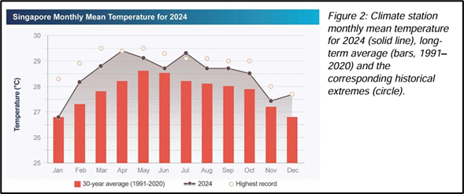
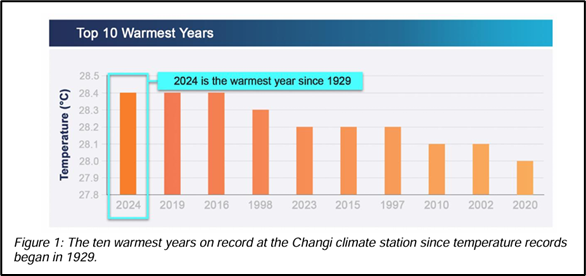
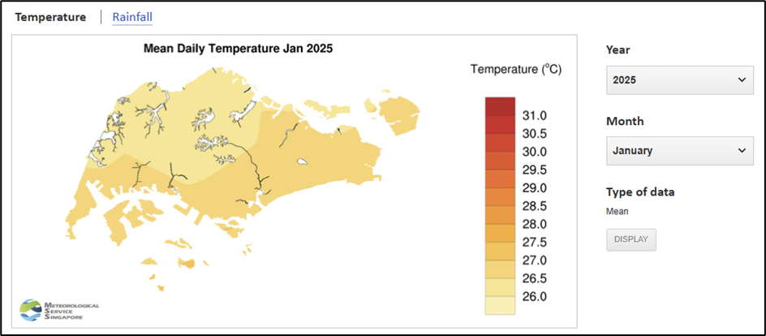
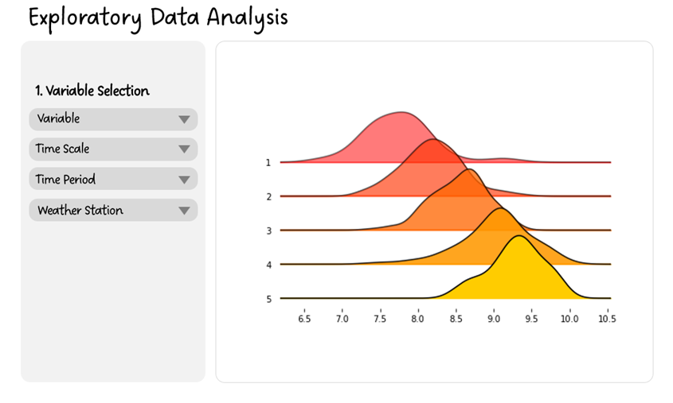
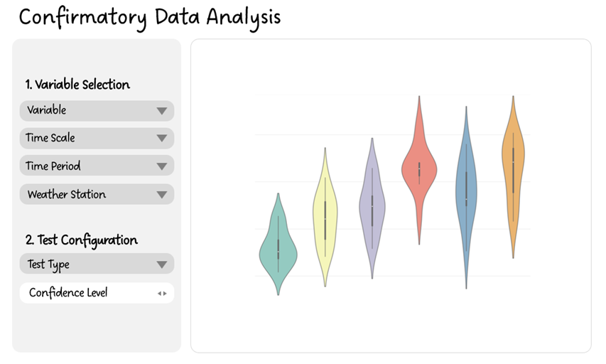
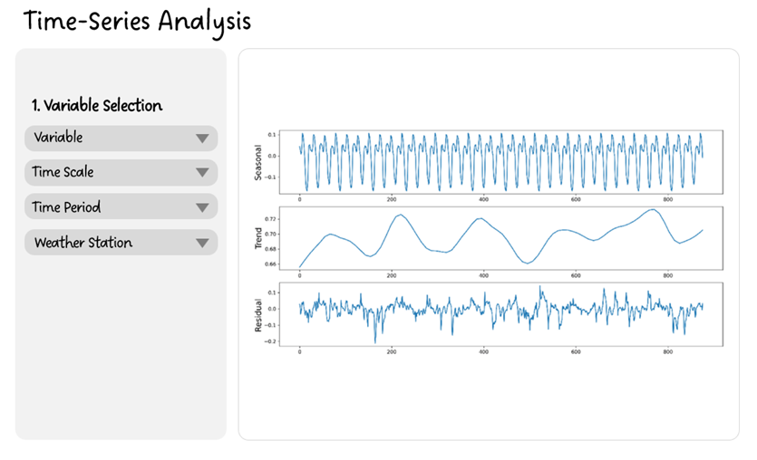
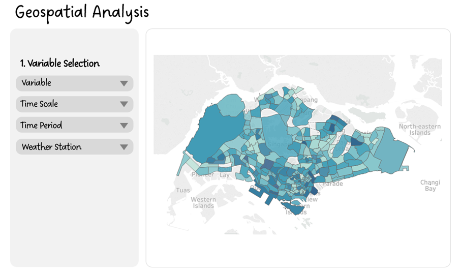
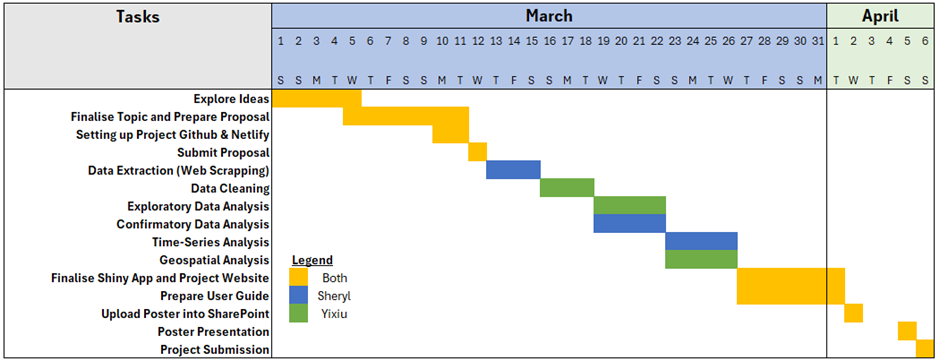

Project Proposal
1.0 Introduction
Southeast Asia is widely considered to be one of the regions that is most vulnerable to rising temperatures due to climate change and rapid urbanisation. People in this region are chronically exposed to the heat in the tropics, which is further exacerbated by the region’s high humidity1. Singapore is no exception, similarly experiencing rising temperatures.
In 2024, Singapore experienced one of its hottest years, tying with 2019 and 2016 as the warmest years on record2. Throughout the year, the temperatures recorded were equal to or greater than their long-term averages3. According to the Meteorological Service Singapore (MSS), the island is heating up twice as fast as the rest of the world4. This increase in temperatures is caused by a combination of global warming and the urban heat island effect, a phenomenon where urban areas become much warmer than rural areas as they are more built-up and densely populated.
Besides rising temperatures, climate change has also led to more weather extremes in Singapore, with more frequent hot days and more extreme daily rainfall. In 2024, Singapore recorded above-average rainfall, averaging 2,739.8mm, which is 8.1% above the long-term average of 2,534.3mm5.
These extreme climate changes pose severe risks to public health, causing increased heat stress, dehydration, and heat-related illnesses, particularly among vulnerable populations like the elderly and those with pre-existing health conditions6. It may also result in other indirect climate challenges, such as disruptions to water and food supply.
Given the complexity of Singapore’s climate challenges, there is a need for effective and comprehensive visual analytics. This would enhance understanding and communication of these climate trends by visualising complex data in an intuitive and accessible format.
2.0 Motivation and Objectives
While traditional weather applications and websites offer valuable real-time information on weather conditions and standard forecasts focusing primarily on short-term weather predictions, they often fall short when it comes to in-depth analysis and visual exploration of climate data. These short-term forecasts may not take into account historical data, which is crucial for understanding long-term trends.
MSS also provides annual reports on historical climate data7. However, these reports typically compare current year temperatures and rainfall to a 30-year average as shown in the screenshot below:

Although this approach is useful for understanding deviations from a historical norm, it has its limitations. Using a long-term average as a benchmark can mask subtler year-to-year variations and recent trends that are crucial for recognising acceleration in phenomena such as the urban heat island effect or shifts in rainfall patterns due to climate change.
Furthermore, the report also only highlights the top ten warmest years and fails to offer a chronological comparison that would allow for a clearer visualisation of climatic changes over time.

This selective presentation can obscure the continuous historical context needed to assess the progression of climate trends and hampers the ability to perform detailed year-over-year comparative analysis.
While MSS publishes climate maps that visualise differences in mean temperature and rainfall across regions, the maps currently lack the spatial resolution necessary for detailed local analysis. They offer a general overview but do not capture the nuances across neighbourhoods – information which could be useful for urban planning.

Given these limitations, the primary objective of our project is to develop an R Shiny application to provide a comprehensive and interactive platform to visualise and analyse climate data over time. The R Shiny application would achieve the following:
Forecast Trends: Utilise MSS’ temperature and rainfall records to generate both short-term and long-term forecasts, providing a clearer picture of future climate conditions.
Geospatial Visualisation: Leverage on visualisation tools, such as choropleth maps, to visually represent the spatial distribution of climate variables (temperature, rainfall, etc.) across Singapore. This helps to identify localised hotspots and areas that are particularly vulnerable to climate extremes.
Data Exploration: Allow users to interact with the data dynamically through choosing different time ranges, regions and variables.
Ultimately, the R Shiny application is designed to complement existing weather reports and applications by offering deeper insights into long-term climate trends. We hope that these insights would enable stakeholders such as policymakers, urban planners and researchers to bridge the gap between day-to-day weather reporting and the long-term climate scenarios essential for sustainable planning and resilience-building strategies.
3.0 Dataset
The dataset for this project will be sourced from the MSS website8. It features extensive historical daily records that include measurements of daily rainfall, temperature, and wind speed. These records are collected from 64 weather stations across Singapore, covering a period from 1980 to 2025.
We noted that the data is stored disparately on the website, segmented by both month and by weather station. As such, to effectively utilise this data, it must be scraped from the website and consolidated into a single dataset.
Some of the R packages that will be used for the data scraping and consolidation process are listed below:
rvest: This package will be used for scraping HTML content from the MSS websitehttr: This package will be used alongsidervestto access and download pages from the MSS website.dplyr: This will be used in the data consolidation process as it offers functions for data manipulation and transformation.
4.0 Methodology and Approach
The R Shiny application will be structured around three core components: Exploratory & Confirmatory Data Analysis, Time-Series Analysis & Forecasting, and Geospatial Analysis. Details and mock-ups of each component will be elaborated in the subsequent sections.
4.1 Exploratory & Confirmatory Data Analysis Module
4.1.1 Exploratory Data Analysis Sub-Module

This module provides a variety of visualization tools designed to help users gain an initial understanding of the dataset, uncover underlying patterns, and formulate hypotheses for further analysis.
Some of tools used would include:
Ridgeline Plots: These are utilized to visualize the distributions of variables like mean temperature or daily rainfall across different weather stations. The
ggridgespackage will be employed to create these plots, which are effective for comparing multiple distributions and highlighting variations in data across different locations.Line Charts: Essential for tracking changes and trends in climate metrics such as mean temperature and rainfall over time. These charts allow users to follow the progression of these variables, helping to identify periods of unusual activity or notable stability. Line charts will be generated using the
ggplot2package.Calendar Heatmap: Used for examining patterns in daily climate data. By mapping the climate variables to a calendar layout, users can easily identify seasonal trends and persistent anomalies over time. The
ggplot2package will be used to create the calendar heatmaps.
Users will have the flexibility to select variables of interest and segment data into subsets for further exploration.
4.1.2 Confirmatory Data Analysis Sub-Module

The primary analytical tool used in the modules will be the ggbetweenstats() function, which enables users to perform one-way ANOVA tests. This statistical test is used for comparing means across multiple groups to determine statistical significance, i.e. assessing variations in climate data such as temperature or rainfall across different weather stations.
The results from these tests will be visualised using a combination of box and violin plots, which provides a comprehensive view of data distributions across categories, highlighting differences in means, medians and interquartile ranges. The visual representation would help users to easily identify and understand variations and patterns across groups.
Users will have the flexibility to select variables of interest (e.g. mean temperature, daily rainfall, etc.) and toggle between different types and confidence levels to further tailor and deepen their exploration of the data.
4.2 Time-Series Analysis & Forecasting

4.2.1 Time-Series Analysis Sub-Module
This module focuses on decomposing the time series data into its constituent components – trend, seasonality and residual. We will utilise the STL() function from the feasts package, which applies Seasonal-Trend decomposition using Loess. The decomposition allows for a detailed examination of underlying patterns, and serves as a foundation for subsequent forecasts.
4.2.2 Time-Series Forecasting Sub-Module
This module will focus on generating short-term and long-term climate forecasts using statistical models. ARIMA models tend to perform well in the prediction of variables such as global temperature and precipitation9. Therefore, we will implement the ARIMA model in our time-series forecasting.
To achieve this, we will use the model function from the fable package to fit ARIMA models and generate forecasts. Additionally, the autoplot() function will be used to visualise forecasted trends against historical data.
Forecasted results will be presented using line charts, allowing uses to compare predicted values with historical trends. Users will have the flexibility to adjust forecasts to explore both short-term and long-term predictions, as well as specify confidence intervals to account for uncertainty in the forecasts.
4.3 Geospatial Analysis

The geospatial visualization component will map the spatial distribution of climate variables across Singapore, allowing users to explore spatial patterns, trends, and identify localized climate anomalies.
Choropleth maps will be utilized to visually represent variations in climate variables across different regions, with colour gradients indicating temperature or rainfall intensity. The tmap package will be used to generate these maps, while the sf package will manage and manipulate spatial data, ensuring precise alignment of climate data with Singapore’s geographical boundaries.
We will extract the relevant shapefiles from the Urban Redevelopment Authority (URA) website and integrate geographical coordinates of weather stations to map the climate data across Singapore.
5.0 Summary of R Packages Used
The list below summarises the R packages that will be used in the project:
Data Collection & Processing
rvest– Used for web scraping to extract historical climate data (temperature, rainfall, and wind speed) from the MSS website.httr– Works alongside rvest to access and download webpages containing climate data.dplyr– Facilitates data cleaning, processing, and transformation for structured analysis.
Exploratory & Confirmatory Data Analysis
ggplot2– Used to generate line charts, calendar heatmaps, and other visual representations of climate trends.ggridges– Used to create ridgeline plots, allowing users to compare distributions of temperature and rainfall across different weather stations.ggTimeSeries– Generates calendar heatmaps to visualize daily climate variations over time.ggbetweenstats– Implements one-way ANOVA tests to statistically compare variations in climate variables across weather stations.
Time-Series Analysis & Forecasting
feasts– Utilized for time-series decomposition using the STL() function, breaking down data into trend, seasonality, and residual components.fable– Used for time-series forecasting, implementing ARIMA models via the model() function and visualizing predictions with autoplot().
Geospatial Analysis
sf– Manages and processes geographical data, ensuring accurate alignment of climate data with Singapore’s boundaries.tmap– Generates interactive choropleth maps, visually representing temperature and rainfall distributions across Singapore.
6.0 Project Management
6.1 Github Link
The project is managed through the following Github Repository: https://github.com/sherylanntys/ISSS608-Project
6.2 Project Timeline
The screenshot below provides an overview of our project timeline and responsibilities. It outlines key task allocations and deadlines.

Footnotes
Hui, C. H. S., & Begum, S. (2025, January 10). Degrees of danger: Beating the heat in South-east Asia. The Straits Times. https://www.straitstimes.com/asia/se-asia/degrees-of-danger-beating-the-heat-in-south-east-asia↩︎
Sim, S. (2025, January 10). 2024 one of the hottest years, rainfall also higher than average: Met Service. The Straits Times. https://www.straitstimes.com/singapore/2024-joint-warmest-year-on-record-for-singapore↩︎
Meteorological Service Singapore. (2025). Singapore Climate 2024: The year in numbers. Meteorological Service Singapore.↩︎
Ng, D., & Tang, H. H. (2019, January 13). Why Singapore is heating up twice as fast as the rest of the world. Channel News Asia. https://www.channelnewsasia.com/cnainsider/singapore-hot-weather-urban-heat-effect-temperature-humidity-906231↩︎
Sim, S. (2025, January 10). 2024 one of the hottest years, rainfall also higher than average: Met Service. The Straits Times. https://www.straitstimes.com/singapore/2024-joint-warmest-year-on-record-for-singapore↩︎
Teng, R., & Ng, D. (2024, January 10). Concerns grow over heat-related health risks as Singapore gets warmer. Channel News Asia. https://www.channelnewsasia.com/singapore/singapore-weather-heat-stress-higher-warmer-temperatures-2100-climate-study-health-risks-concerns-4036561↩︎
Meteorological Service Singapore. (2025). Singapore Climate 2024: The year in numbers. Meteorological Service Singapore.↩︎
Meteorological Service Singapore. (n.d.). Historical daily records. Meteorological Service Singapore. https://www.weather.gov.sg/climate-historical-daily/↩︎
Lai, Y., & Dzombak, D. A. (2020). Use of the Autoregressive Integrated Moving Average (ARIMA) model to forecast near-term regional temperature and precipitation. Weather and Forecasting, 35(3). https://doi.org/10.1175/WAF-D-19-0158.1↩︎